The problem
Teams juggled 5–8 frameworks across spreadsheets and email, spending 40+ hours per assessment cycle with no single source of truth.
Designing an enterprise compliance system for government and large organizations.

Versos is an enterprise Governance, Risk & Compliance (GRC) platform designed to help organizations manage complex regulatory frameworks such as PCI DSS, ISO 27001, SAMA, and custom government standards.
The project was initiated to replace fragmented compliance workflows that relied heavily on spreadsheets, documents, and manual coordination. These methods made audits time-consuming, error-prone, and stressful, especially for organizations operating under multiple regulatory authorities.
Teams juggled 5–8 frameworks across spreadsheets and email, spending 40+ hours per assessment cycle with no single source of truth.
Led end-to-end design: research across 4 organizations, information architecture, high-fidelity UI, a design system, testing and developer handoff.
3× more assessments managed at once, faster evidence review with AI, and shorter time to audit readiness.
As the UI/UX Designer, I led the end-to-end design of the platform, working closely with developers, technical architects, AI engineers, and client stakeholders.
Assessment builder, evidence tracking, framework mapping.
Risk register, scoring, treatment plans, assessments.
Document lifecycle, policy management, review workflows.
Gap tracking, remediation, assignment, criticality scoring.
Real-time KPIs, risk posture, compliance status.
Component library, tokens, responsive patterns.
Organizations managing multiple regulatory frameworks face fragmented, manual, and time-intensive compliance processes that rely on spreadsheets, scattered documents, and email chains.
This results in audit stress, compliance gaps, and limited visibility into organizational risk posture.
To understand the needs, motivations, and challenges of the people using the platform, I synthesized interview findings into three personas. They represent the main stakeholder groups in governance, risk, and compliance workflows and guided design decisions throughout the project.
I need a clear overview of where we stand without chasing multiple teams and reports.
A senior compliance professional responsible for ensuring regulatory adherence across multiple frameworks. Works closely with assessors and leadership to maintain audit readiness and reduce organizational risk.
Most of my time goes into finding information instead of actually assessing risks.
An operational team member responsible for conducting risk assessments, reviewing controls, and validating evidence within defined timelines.
Give me the big picture, not the operational noise.
A decision-maker who requires high-level insights into organizational risk and compliance to support board reporting and long-term strategy.
Compliance professionals do not want complexity removed. They need to see the full regulatory picture, but in a way that is logically structured and easy to navigate. Oversimplifying workflows or hiding details reduced trust and created uncertainty.
Executive stakeholders want to understand organizational risk and compliance health within seconds. Detailed operational data was less important than trend visibility, severity indicators, and high-level insights.
Users think in terms of ecosystems, not isolated modules. The connections between risks, controls, assessments, and frameworks were more valuable than any single feature on its own.
Across all roles, trust in the system depended on being able to answer who did what, and when. Lack of traceability created compliance risk and reduced confidence in the platform.
Show the full regulatory picture, structured so detail appears when people need it.
Keep related information in view so users never lose their place.
Make every action traceable: who did what, and when.
Surface the links between risks, controls, assessments, and frameworks.
Give every role clear ownership, visibility, and progress tracking.
Interviews, shadowing, competitive analysis
Define principles, user needs, pain points
Information architecture, user flows
High-fidelity mockups, prototypes
Testing, feedback, refinement
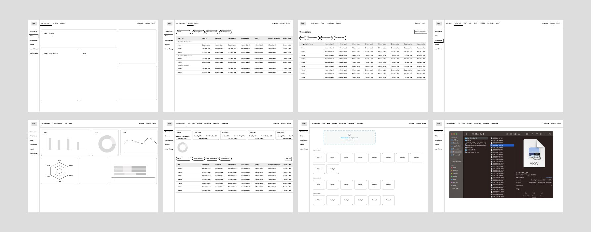
These two flows covered the most connected parts of the product. Select a diagram to enlarge it.
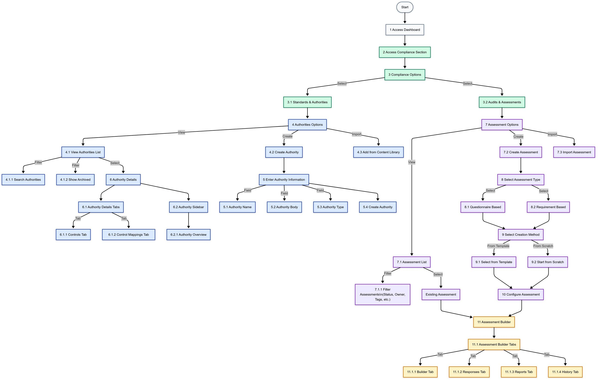
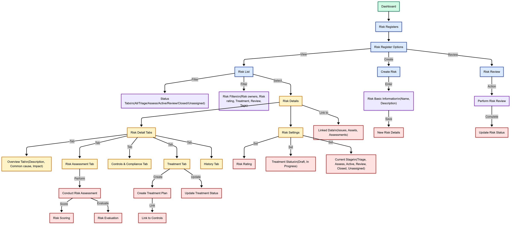
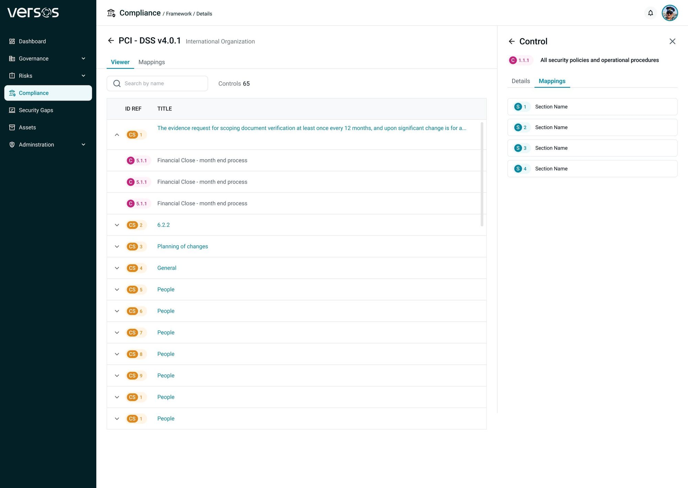
Nested control structure with expandable sections, progress indicators at every level, and a Ref ID system for quick navigation (CS 1, SS 1.1).
Principle: Progressive disclosure
The left panel shows the hierarchical structure while the right panel displays detailed information. Users never lose orientation while navigating deep structures.
Principle: Context over abstraction
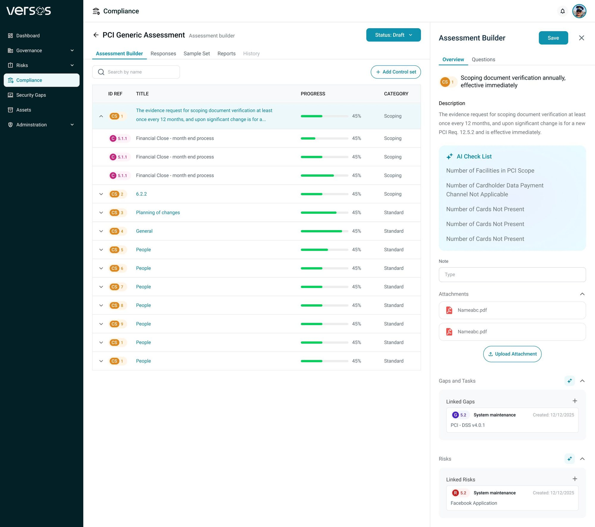
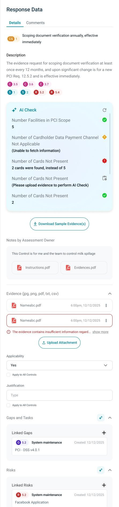
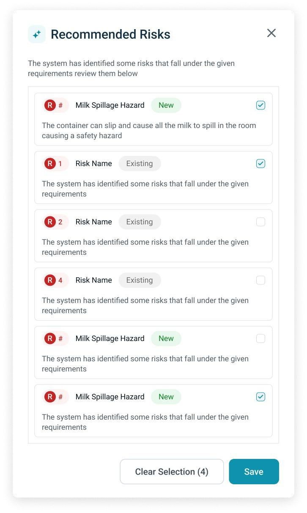
AI checks evidence completeness with explainable reasoning. It shows confidence levels, what was validated, and provides actionable recommendations.
Principle: Trust through transparency
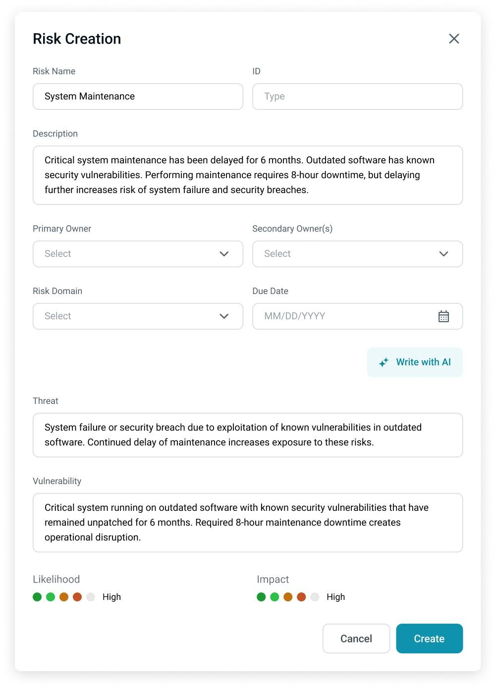
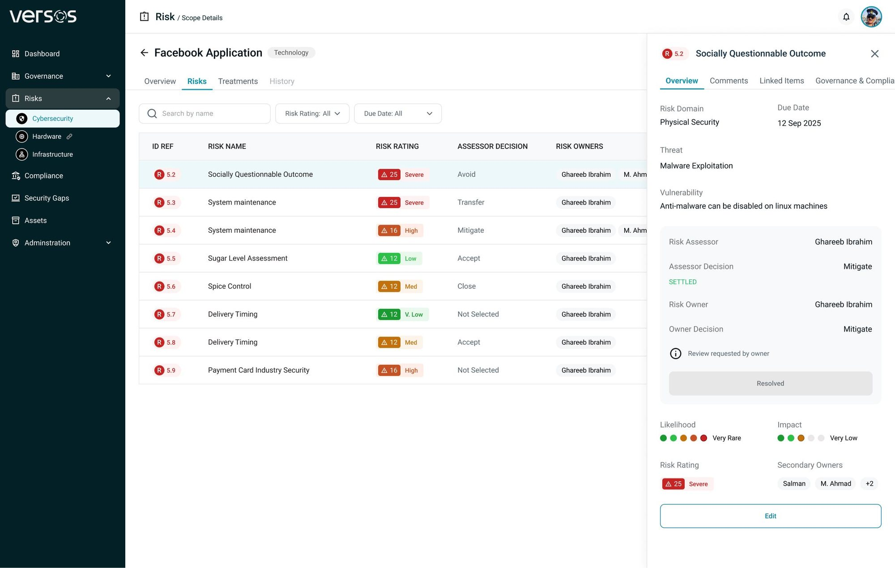
A “Write with AI” feature generates threat analysis, vulnerability identification, and risk scores from just a title and description, saving hours of manual work.
Insight: AI adoption requires trust design
Assessor recommendations are separated from owner decisions, making accountability explicit. Each role has clear decision authority and visibility.
Principle: Collaboration by design
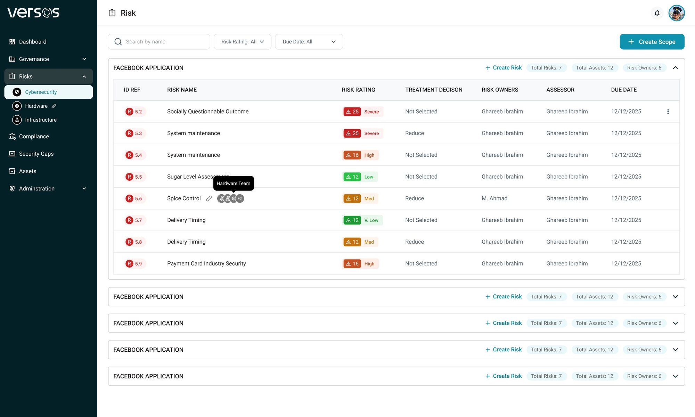
5-point likelihood and impact indicators with colour-coded severity badges.
Insight: Status indicators are navigation
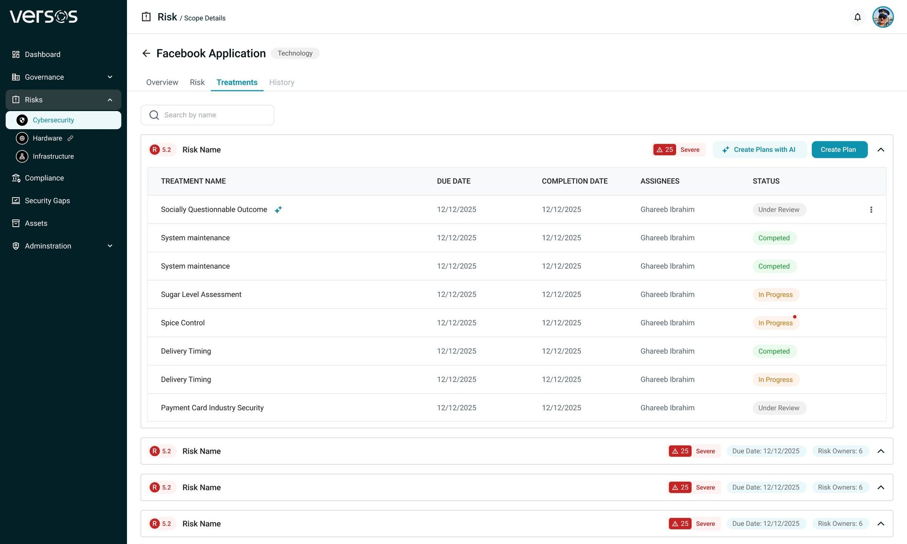
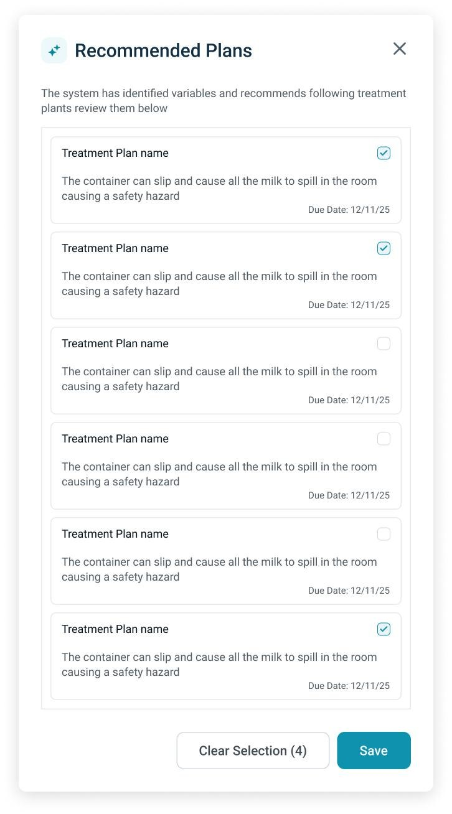
Comprehensive treatment plan creation and tracking, with AI-generated plans that users can review and edit. Structured status workflows (Draft → In Progress → Under Review → Completed) and clear owner accountability keep everything moving.
Principle: Collaboration by design
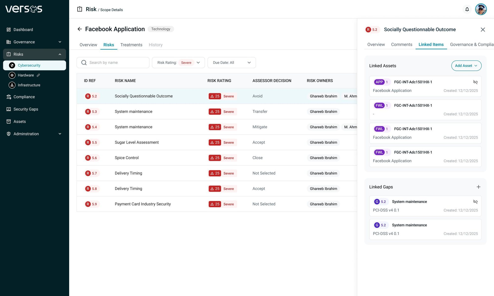
Visible connections to related gaps, assessments, assets, and treatments. Users can navigate the risk ecosystem without losing context.
Principle: Interconnected thinking
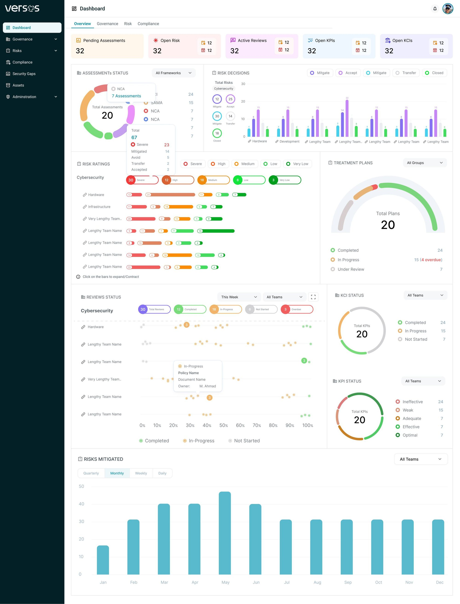
Real-time KPIs, risk posture, and compliance status, shaped around what executives asked for: severity indicators and trends first, operational detail on demand.
Insight: Executives need summaries, not raw data
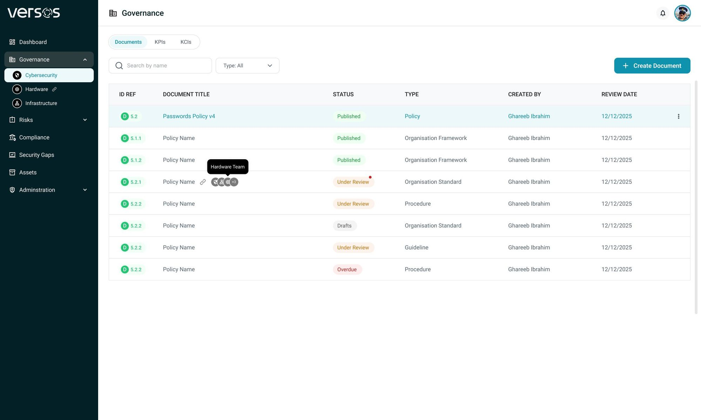
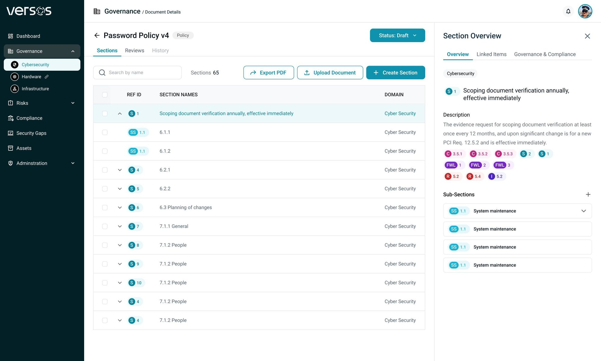
Document lifecycle, policy management, and review workflows.
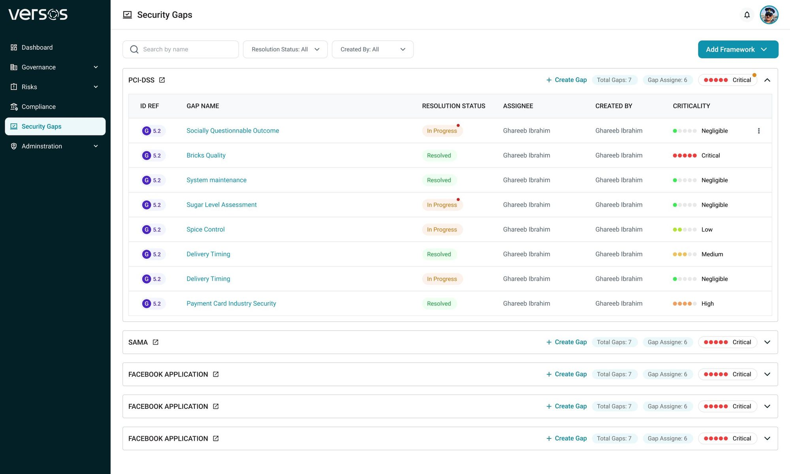
Gap tracking, remediation, assignment, and criticality scoring in one place.
AI-powered evidence analysis accelerated review workflows significantly.
Organizations can now manage three times more assessments simultaneously.
High daily engagement among compliance teams indicates platform adoption.
Reduced time to audit readiness with automated documentation.
Compliance professionals don't need dumbed-down interfaces. They need powerful tools with clear information architecture that respects their expertise.
Designing Versos required deep domain understanding, systems thinking, close cross-functional collaboration, and constant iteration. It reinforced my interest in complex systems, governance, and policy-driven design, while strengthening my ability to design at scale for real-world impact.
When do users trust versus override AI decisions, and what builds appropriate trust?
Best practices for making multidimensional data accessible to all users.
How design can support governance, compliance, and regulatory frameworks.
How to balance flexibility with consistency in large-scale systems.
Thank you for reading.
If you are building something complex and want it to feel clear, I'd love to talk.
Get in touch ↗